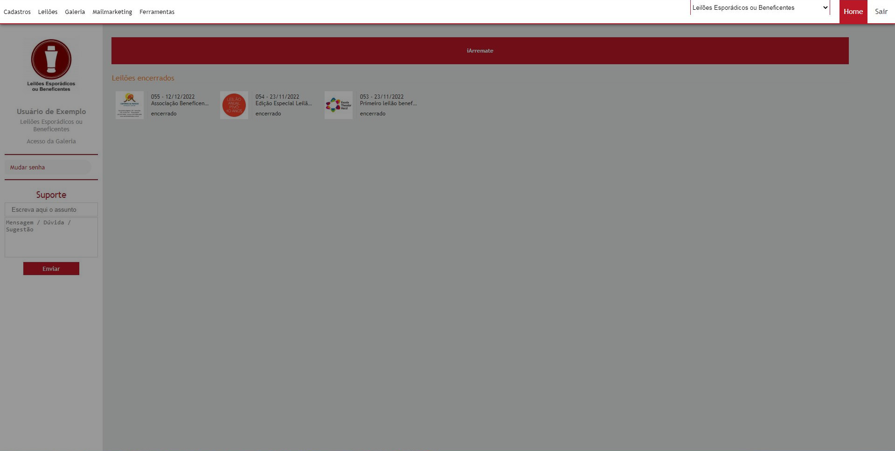
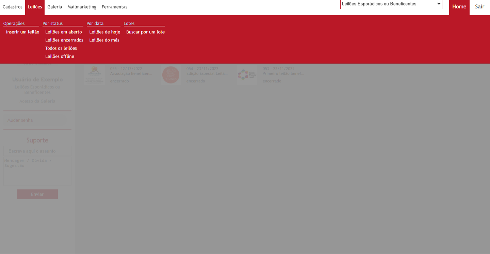
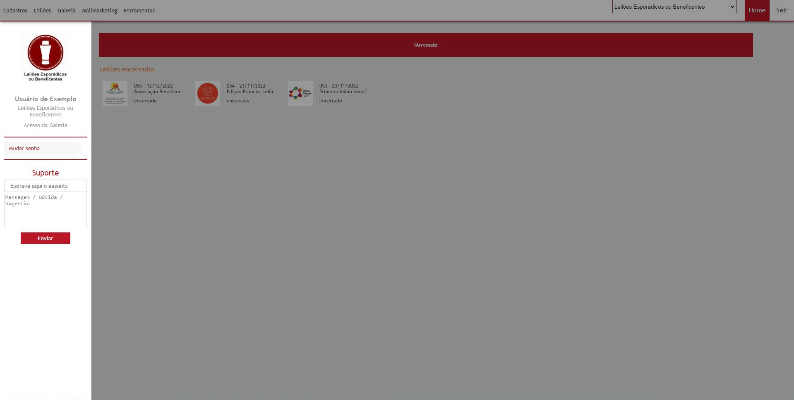
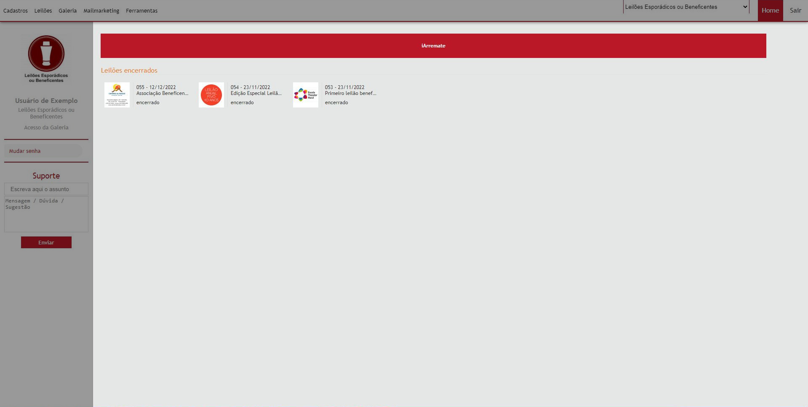
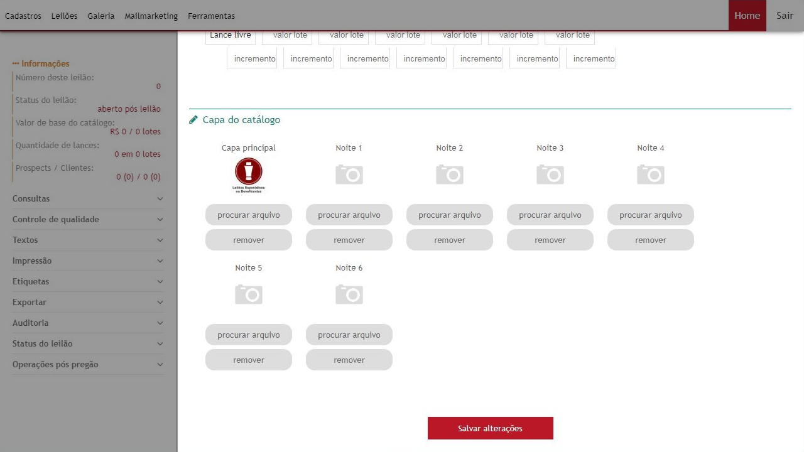

Acessando o Painel Administrativo
Link de acesso: https://adm.iarremate.com/
Para acessar o painel administrativo você precisará acessar o link acima com seu usuário e senha em mãos. O usuário de acesso é pessoal e intransferível, limitado a 3 usuários de acesso por galeria.
- Criação de usuário
- Para a criação de novos usuários de acesso à galeria é necessário preencher a ficha de cadastro de usuários e enviar por e-mail junto com cópia de documento de identidade com foto (RG, CPF, CNH, Documento Único, entre outros).
Sobre o Painel Administrativo
O Painel administrativo é o ambiente onde a galeria poderá gerenciar todos os leilões na plataforma. Ele é composto pelo Cabeçalho, Menu lateral e área de trabalho.
- Cabeçalho
- O cabeçalho ficará fixo na parte superior do painel durante toda a sua navegação. Aqui você acessará sessões do portal podendo visualizar informações de seus clientes, leilões, entre outros, além de sempre poder voltar na página inicial do painel clicando em “Home”, ou sair do painel.
- Menu Lateral
- Este menu se encontra na barra lateral esquerda do painel. No menu lateral você encontrará opções para acessar ferramentas específicas dentro de cada sessão do painel, você encontrará ali outros menus e sub-menus dependendo da sessão que estiver acessando no momento.
- Menu superior
- O menu superior aparecerá em alguns momentos em sessões específica, ele sempre será exibido abaixo do cabeçalho. Nele terá acesso outros tipos de ferramentas referente à sessão e à opção do menu lateral selecionada.
- Área de Trabalho
- Este é o ambiente central do painel onde será exibido as informações selecionadas e onde também poderá ser feitas edições de leilões e outras informações.
- Pop-up
- Para a execução de algumas ações no painel poderão ser exibidos alguns poups solicitando que você confirme certas ações ou que preencha alguma informação a mais para o correto funcionamento da ação.
Cabeçalho
Menu superior
Página Inicial (Home)
Assim que fizer o login você será direcionado para a Home Page do painel de sua galeria. Nesta área você conseguirá visualizar um resumo dos seus últimos leilões realizados e dos próximos leilões em edição, em lances prévios ou que esteja acontecendo agora. Alem de funções específica no menu lateral.
- Menu lateral
- No menu lateral você visualizará a logomarca, nome da galeria e seu nome de seu usuário. Você poderá também fazer a alteração de sua senha de acesso por aqui, clicando em “Mudar senha”.
- Área de trabalho
- Na área de trabalho você encontrará o resumo dos próximos registrados na plataforma e também dos últimos leilões realizados.
- O próximo leilão sempre estará em uma posição de destaque, exibindo nele alguns botões para realizar o pregão e acessar a ficha do lote. Segue as funções dos botões:
- Opções do Pregão
- Clicando neste botão você será direcionado para a página do “Homebroker”, ambiente onde acontece o pregão online.
Menu Lateral
Área de Trabalho
Criando um novo leilão
- Como criar um novo leilão:
- Para inserir novos leilões a galeria deverá acessar seu painel administrativo, clicar no menu superior em “Leilões”, em seguida clicar em “Inserir um leilão”, onde será aberto uma nova ficha de leilão a ser preenchida pela galeria.
- Preenchendo a ficha do leilão
- A ficha do leilão deverá ser preenchida se atentando a todos os campos obrigatórios e pela correta digitalização das informações como título, categoria, data/hora, transmissão de vídeo, endereço, contato, exposição, identificação do leiloeiro, comissão, tabela de incremento e demais informações referentes ao leilão. Após as informações serem adicionadas a ficha do leilão deve ser salva clicando em “Salvar Alterações” para que o leilão seja criado.
- Caso saia da página sem salvar as alterações todas as informações serão perdidas.
- As informações principais de contato serão importadas do leilão anterior, sendo necessário informar em novos leilões o título, data/hora, transmissão e período de exposição. Todas as demais informações deverão ser conferidas pela galeria.
- Quando um novo leilão é criado seu status será de “Offline”, para acessá-lo deverá entrar no menu superior em “Leilões”, em seguida clicar em “Leilões offline”. Para acessar a ficha do leilão basta dar um duplo clique no leilão existente na lista ou selecionar o leilão, clicar em “Funções”, em seguida clicar em “editar”.
- Todas as informações da ficha do leilão poderão ser editadas a qualquer momento, exceto o número do leilão.
- Inserindo imagem de capa
- Apenas após a criação da ficha do leilão será possível inserir a imagem que será utilizada como capa do leilão. A imagem de capa deve ser em .jpg ou .png e deverá ter a proporção de 300x300 pixels.
- Para adicionar a imagem de capa basta acessar a ficha do leilão (descrito no passo anterior), descer a página até o final onde estará escrito “Capa do catálogo”, clicar em “procurar arquivo” e selecionar dentro do diretório do seu computador a imagem que será utilizada como capa.
- Capa principal é utilizada como padrão para todas as noites.
- Você poderá adicionar também uma capa diferente para cada noite do pregão, quando houver.
- Para alterar a capa do catálogo basta clicar em “procurar arquivo” e selecionar uma nova imagem dentro do diretório de seu computador.
- Para remover uma imagem basta clicar em “remover” abaixo da imagem que deseja remover.
Ficha do Leilão

Inserir Capa
Inserindo edital e informações de pagamentos e retiradas.
- Edital
- Para inserir o edital do leilão basta entrar na ficha do leilão e clicar no menu lateral em “Textos”, em seguida clicar em “Edital do leilão”. Abrirá uma ferramenta de edição de texto onde você poderá inserir as informações do edital e edita-las da forma que melhor lhe convier. Após inserir as informações basta clicar em “Salvar conteúdo”.
- Pagamentos e retiradas
- Para inserir o edital do leilão basta entrar na ficha do leilão e clicar no menu lateral em “Textos”, em seguida clicar em “Pagamentos e Retiradas”. Abrirá uma ferramenta de edição de texto onde você poderá inserir as informações de Pagamentos e Retiradas e edita-las da forma que melhor lhe convier. Após inserir as informações basta clicar em “Salvar conteúdo”.
Inserindo um novo lote
- Como inserir um novo lote:
- Para inserir um novo lote você precisará abrir a FICHA DO LEILÃO, clicar no menu lateral em “Cosultas”, em seguida clicar em “Relação de lotes”. Na tela que abrir clique em “Lotes”, em seguida clique em “Inserir”, onde será aberto uma nova ficha de lote a ser preenchida pela galeria.
- Preenchendo a ficha do lote:
- A ficha do lote deverá ser preenchida se atentando a todos os campos obrigatórios e pela correta digitalização das informações.
- As informações que devem ser preenchidas são:
-
Numeração:
Com número do lote, lote extra (se houver) e Noite em que participará.
Informações para a galeria: Deixar em branco (preenchimento automático após salvar informações)
Informações para o site: Adicionar nesse campo toda a descrição da peça, incluindo nome do artista, descrição geral, medidas, técnica usada, etc.
Classificação: informar a classificação do lote e o nome do artista (se houver) - PS: O nome do artista nesse campo serve para criar um link com a biografia do artista existente no site www.guiadasartes.com.br.
- Financeiro para a galeria: inserir valor inicial da obra (caso a peça seja lance livre nunca deixar valor igual a R$0,00, colocar o valor de início de incremento, geralmente R$20,00 ou R$50,00 reais.
- Explicação: O primeiro lance a ser confirmado pelo cliente é o valor de base, se o valor for R$0,00 não terá como ser confirmado.
- Informar número de parcela (caso aceite parcelado)
- Valor de avaliação não tem necessidade de preencher.
- Dimensão e Informações adicionais: Deixar em branco, o campo não está sendo utilizado atualmente.
- História da Obra: Caso queira fornecer informações a mais da obra que não façam parte da descrição você poderá adicioná-la aqui.
- Após Preencher todas as informações clicar em “Salvar cadastro”.
- Inserindo imagem do lote
- Apenas após a criação da ficha do lote será possível inserir a imagem. A imagem deve ser em .jpg ou .png e não deverá passar o tamanho ocupar mais de 4MB de tamanho. Cada lote poderá exibir até 8 lotes.
- Para adicionar a imagem do lote basta acessar a ficha do lote, descer a página até o final onde estará escrito “Fotos”, clicar em “procurar arquivo” e selecionar dentro do diretório do seu computador a imagem ou as imagens que serão utilizadas.
- Para adicionar mais uma imagem clicar em “procurar arquivo” e selecionar a nova imagem dentro do diretório de seu computador.
- Para remover uma imagem basta clicar em “remover” abaixo da imagem que deseja remover.
- Caso a imagem esteja na posição incorreta você poderá clicar em “girar”, a imagem irá rotacionar em 90º em sentido horário.
- Para selecionar outra imagem como destaque basta clicar em “destaque” na imagem que deseja alterar.
Ficha do Lote